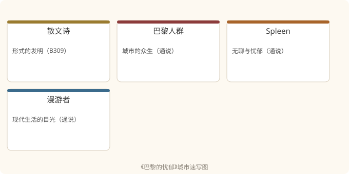

巴黎的忧郁
一、基本信息
| 作者 | 夏尔·波德莱尔 |
|---|---|
| 成书/出版 | 1868年（Britannica B309：Petits poèmes en prose (1868)——《恶之花》作者页口径） Charles Baudelaire — Encyclopaedia Britannica（百科全书） |
| 国别/地区 | 法国 |
| 时代 | 近代 · 19世纪60年代 |
| 体裁 | 散文诗集 |
| 语言 | 法语 |

《巴黎的忧郁》城市速写图（主题·结构图）
二、创作背景
Britannica（B309）：Petits poèmes en prose——'the most successful and innovative early experiment in prose poetry'（散文诗最早、最成功、最具创新性的实验）。
Britannica（B309）：波德莱尔《恶之花》(1857)——'perhaps the most important and influential poetry collection published in Europe in the 19th century'——本集为其姊妹篇。
题材（通说待核）：巴黎人群像——穷苦人、老人、寡妇、狗与镜子。
三、内容脉络
（通说待核——B309未载篇目）五十篇散文诗的城市速写。
（通说待核）《穷人》式的苦难清单与'现代生活的画家'目光。
四、主要人物表
| 人物 | 身份 | 说明 |
|---|---|---|
| 抒情'我' | 城市漫游者 | （通说待核） |
五、主题与艺术特点
- 散文诗的形式发明（B309）。
- 都市人群与'无聊'（书名 Le Spleen——通说待核）。
- 现代性的美学（B309 语境）。
六、影响与评论
- Britannica：'the most successful and innovative early experiment in prose poetry'（B309）。
Charles Baudelaire — Encyclopaedia Britannica（百科全书） - Britannica：《恶之花》的19世纪影响力定位（B309 交叉）。
Charles Baudelaire — Encyclopaedia Britannica（百科全书）
七、阅读建议
难点
- 散文诗与格律诗的边界。
- 第二帝国巴黎的城市史（通说待核）。
- 《巴黎的忧郁》中译本（人民文学/上海译文等——通说待核）。
- 法文原版（公有领域）。
《恶之花》后读；散文诗源流首选。
八、待核实
- 篇目（《穷人的眼睛》等）核对（B309未载）。
- 1868年死后出版细节待核。
- '五十篇'数量待核。